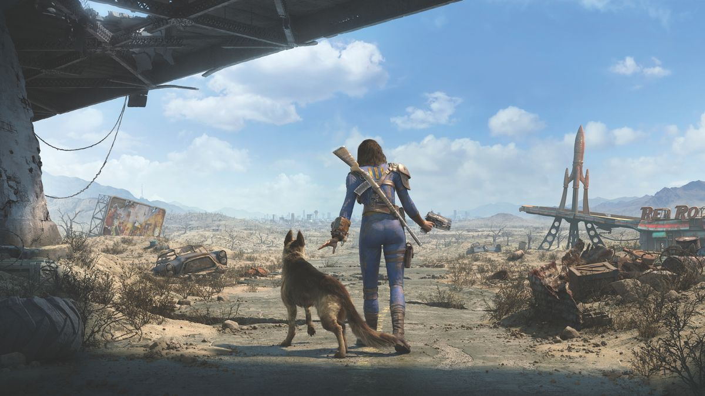
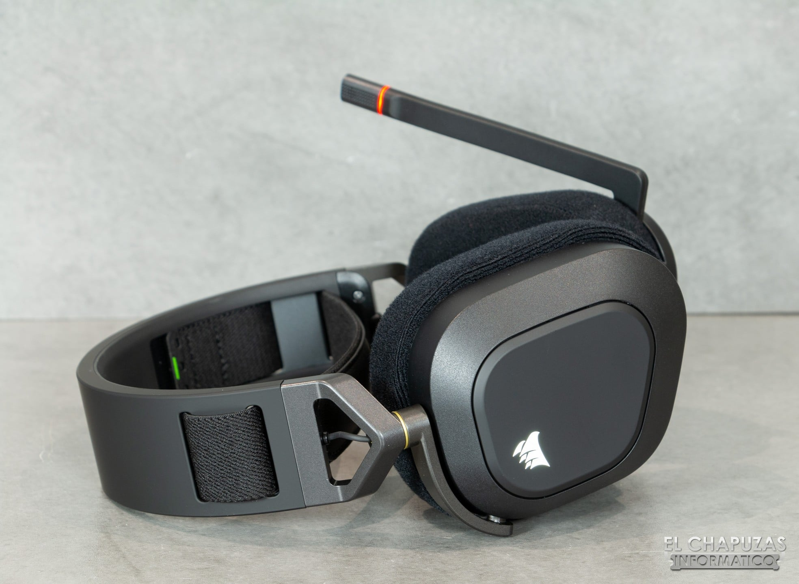

Reviews

Analizamos la versión next gen de Fallout 4
Fallout 4 se actualiza y añade nuevos contenidos, misiones y mejoras gráficas y de rendimiento en PS5, Xbox SeriesX/S y PC
Análisis de TopSpin 2K25
Hemos esperado muchos años la vuelta de Top Spin y TopSpin 2K25 es en parte lo que esperábamos pero también nos ha defraudado fuera del terreno jugable, donde sí brilla

Corsair HS80 RGB Wireless - Análisis
Unos auriculares perfectos para el gaming, con un diseño sobrio y eficiente. Una experiencia de sonido premium algo empañada por una batería que podía haber sido un poco mejor. Es cualquier caso, estoy seguro que los HS80 serán un buen fichaje para tu setup